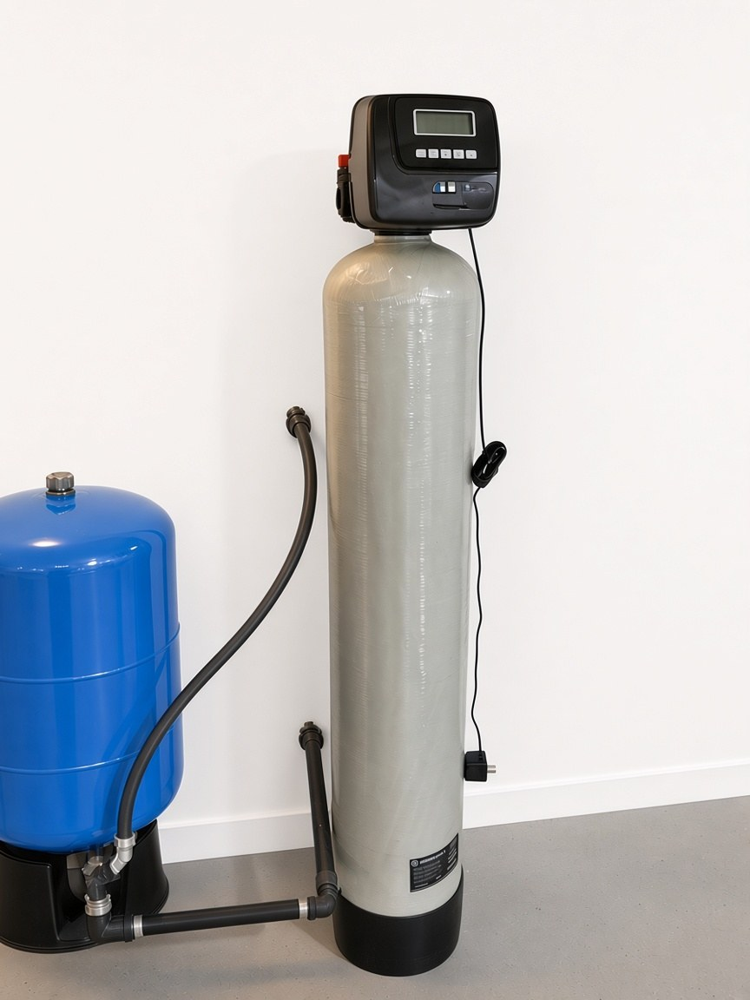

Salem County wells
Well Water Treatment in Pittsgrove Township, NJ
856-294-1775Call or text. Open 7 AM – 7 PM. Free in-home water test.

What the state data shows
- One in three wells tested high for radium. From 2002 to 2007, 104 of 314 Pittsgrove wells tested at home sales (33%) were over the state limit for gross alpha. In Upper Pittsgrove it was 18% (NJ DEP well test results, 2002–2007).
- Still on the state’s list. The NJ Department of Health names Pittsgrove, Upper Pittsgrove, Alloway, and Oldmans as the Salem County towns with a high share of wells over the limit (NJ Department of Health radium flyer).
- Farm country means checking nitrate too. Nitrate can reach wells from fertilizer and septic systems. It’s part of every home-sale well test in New Jersey.
The state health department says a water softener or reverse osmosis system can lower radium in well water, and that these systems need upkeep to keep working. In homes it checked in three South Jersey towns, 27% of treatment systems were not bringing radioactivity down to safe levels, likely because of poor maintenance (NJ Department of Health radium flyer). That’s why our salt delivery includes a quick service check of your unit.
How we help homes in Pittsgrove Township
We’re well water specialists at treating well water. We’re a small, family-owned business in Woodstown, and we work with homeowners only.
- Well water treatmentIron, smells, acidic water, and whole-house filters.
- Water softenersStop scale, spots, and hard water buildup.
- Reverse osmosisClean drinking water from its own faucet at the sink.
- PFAS treatmentCarbon and reverse osmosis systems for “forever chemicals.”
- Home-sale well testing helpWe fix what the state well test finds.
- Salt delivery, $12 a bagWe deliver and fill up the salt tanks and service the unit.

Questions we hear in Pittsgrove Township
How do I find out if my well has radium?
Have it tested for gross alpha by a NJ certified lab. If you have an old home-sale test, look for the gross alpha line and call us to go over it. You can also check the NJ DEP well test maps.
What fixes radium in Pittsgrove wells?
Usually a water softener for the whole house, a reverse osmosis system for drinking water, or both. We size it to your test.
Do you deliver salt to Pittsgrove and Elmer?
Yes. Salt is $12 a bag. We deliver and fill up the salt tanks and service the unit.
Nearby towns we serve
- Well Water Treatment in Woodstown and Pilesgrove, NJ →
- Well Water Treatment in Vineland, NJ →
- Well Water Treatment in Upper Deerfield and Hopewell, NJ →
- Well Water Treatment and Home-Sale Well Testing in Salem County, NJ →
Facts on this page come from the New Jersey Department of Environmental Protection, the New Jersey Department of Health, and town water records, linked above. Older well data is dated so you know how old it is. Water changes from home to home, so testing your own water is the only way to know.
Call for a free water test
We’ll come to your home in Pittsgrove Township, test your water, and walk you through what it shows — with a free estimate and no pressure.